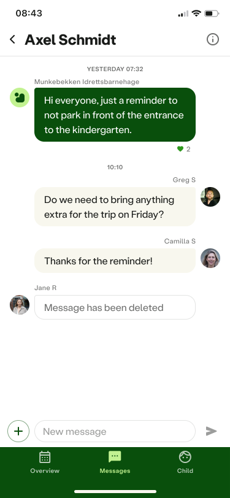
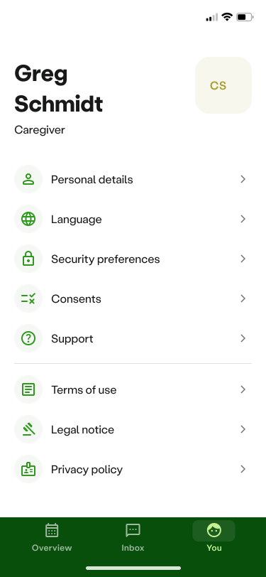
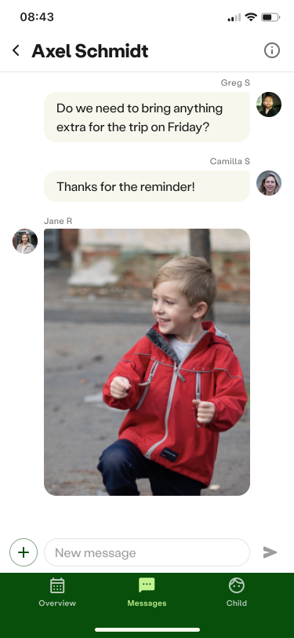

Dibber
Kindergarten Settings and User Profiles. Gjorde innsikt- og designarbeid for hvordan man administrerer brukere, tilganger og roller. Rammeverk, flyt og design for adminportal for å administrere ulike barnehager, ansatte, foreldre osv. Når vi jobbet med utviklere i India for produksjonen, oppnådde vi pikselnøyaktig design som gjenspeilet designintensjonene nøyaktig. Vi jobbet kontinuerlig med tanken om at vi alltid setter barnet i sentrum av produktet, vi designet først og fremst for mobil, og jobbet for inkludering og tilgjengelighet.
Jeg hadde hovedansvar for å sette opp og holde i den overordnede strukturen og metodikken til designsystemet. Vedlikeholde og se over komponenter slik at de blir effektivt og intuitivt satt sammen på tvers av de 6 designerne som jobbet med ulike deler av platformen.